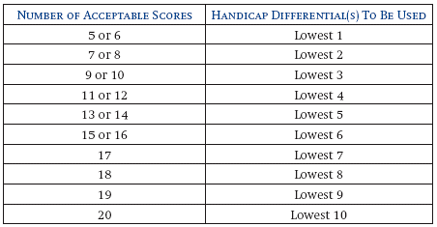

Appendix A USGA Short Course Handicap Computation Procedure
A Short Course Handicap is the USGA's service mark used to indicate a measurement of a player's potential ability on a Short Course (e.g., a golf course, as defined below, that is under 3,000 yards in length for 18 holes or 1,500 yards for nine holes). Potential ability is measured by a player's best scores and is expressed as a whole number. These scores are identified by calculating the Short Course Handicap differential for each score.
A-1. Golf Clubs Permitted to Use Short Course Handicap Procedure
Golf clubs following procedures of the USGA Handicap System are allowed to issue a Short Course Handicap under the following conditions:
(i) Short Course Handicaps may be issued by clubs with courses under 3,000 yards in length for 18 holes. However, such courses may not be issued a USGA Course Rating and Slope Rating.
(ii) A Short Course Handicap is not portable to any golf course other than the one where the Short Course Handicap was produced;
(iii) The golf club must be rated by an authorized golf association using the guidelines set forth in Section 18 of the "The USGA Course Rating System" (USGA Short Course Rating Procedure);
Note: Such handicaps may not be termed a "Handicap Index" and must be identified by an "SL" to indicate that they are Short Course Handicaps.
A-2. USGA Short Course Handicap Formula
 a. How To Determine Short Course Handicaps
a. How To Determine Short Course Handicaps
A Short Course Handicap differential is the difference between a player's adjusted gross score and the USGA Short Course Rating. Short Course Handicap differentials are expressed in strokes taken to one decimal place.
Note: Short course scores are to be adjusted for all situations under adjusted gross scores (see definition of adjusted gross score) except Equitable Stroke Control is not applied.
(i) Plus Differential
When the adjusted gross score is higher than the USGA Short Course Rating, the Short Course Handicap differential is a positive number. The following is an example for determining a differential using a score made on a course with a USGA Short Course Rating of 51.2.
|
Adjusted gross score: |
64 |
|
USGA Short Course Rating: |
-51.2 |
|
Short Course Handicap differential: |
12.8 |
(ii) Minus Differential
When the adjusted gross score is lower than the USGA Short Course Rating, the Short Course Handicap differential is a negative number. The following is an example for determining a differential using a score made on a course with a USGA Short Course Rating of 51.2.
|
Adjusted gross score: |
50 |
|
USGA Short Course Rating: |
-51.2 |
|
Short Course Handicap differential: |
-1.2 |
 b. Computation of Short Course Handicap
b. Computation of Short Course Handicap
The Short Course Handicap formula is based on the best Short Course Handicap differentials in a player's scoring record. If a player's scoring record contains 20 or more scores, the best 10 Short Course Handicap differentials of the most recent 20 scores are used to calculate the Short Course Handicap. The percentage of scores used in the scoring record decreases as the number of scores in the scoring record decreases. If the scoring record contains 9 or 10 scores, only the best three scores (30 to 33 percent) in the scoring record will be used. The accuracy of a player's Short Course Handicap is proportional to the number of acceptable scores posted. A Short Course Handicap must not be issued to a player who has returned fewer than five acceptable scores. A Short Course Handicap is expressed as a whole number (e.g., 10SL).
Example 1 : The following is a sample scoring record of a player with 20 scores in the scoring record that shows how the Short Course Handicap is calculated by a golf club or authorized golf association.

|
Total of 10 lowest Short Course Handicap differentials: |
89.4 |
|
Average (89.4 / 10): |
8.94 |
|
Short Course Handicap (rounded): |
9SL* |
Example 2 : The following procedure illustrates how to calculate a player's Short Course Handicap if the number of acceptable scores in the player's record is fewer than 20 (11 scores available).
(i) Use the following table to determine the number of Short Course Handicap differentials to use based on the number of acceptable scores returned;

(ii) Determine Short Course Handicap differentials;
(iii) Average the Short Course Handicap differential(s) to be used;
(iv) Round fractions of .5 or greater upward
|
Total of lowest 4 Short Course |
44.3 |
|
Average (44.3 / 4): |
11.075 |
|
Short Course Handicap (rounded): |
11SL* |
*Note : A Short Course Handicap is expressed as a whole number, not a decimal number like a Handicap Index. A Short Course Handicap is not portable and not valid at any golf course other than the player's home golf club.